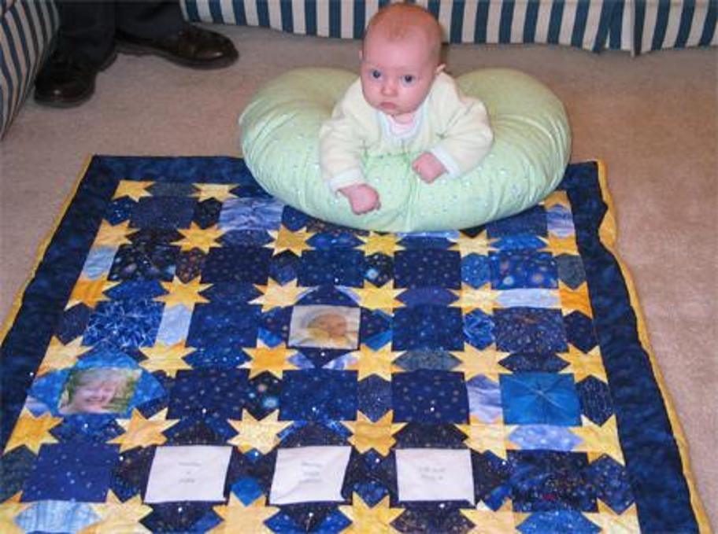

With help from Grampy Ray, I made Amelia a new quilt for Christmas. It is called "Starring Amelia" and is made of star motif fabrics. Many family members' pictures and Amelia's birth information are underneath four pointed squares. She can open the squares to see the pictures and play peek-a-boo! Some of them are pinned open for you to see inside.